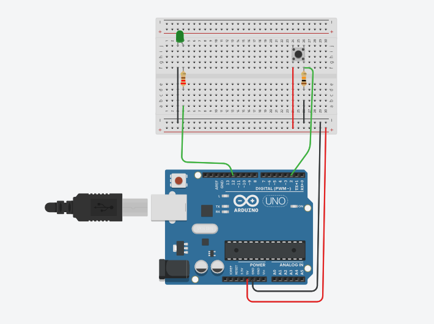

DOBLE
PULSACIÓN (LARGA- CORTA)
Fecha:10/10/2014
Interes:
- La eliminación de rebotes se realiza esperando un tiempo(
T_rebote) para considerar que se ha pulsado.
- En el primer archivo al soltar calcula el tiempo pulsado y activa
la pulsacion larga o corta
- El segundo archivo hace lo mismo pero con un sketch mas limpio.
- En el tercer archivo al superar el tiempo de la pulsacion corta,
se activa la larga.
En domótica es muy normal la utilización de
pulsadores para encender y apagar luces, utlizando los pulsadores como
si fueran telerruptores.
También tenemos la posibilidad de utilizar un mismo
pulsador para varias aplicaciones,
Mediante la utilizacion de pulsaciones temporizadas,
dando una función a la pulsacion larga y otra a la pulsación corta o
contando el numero de pulsaciones.
Ejemplo con pulsaciones cortas enciendo y apago una
led, con
una pulsasion larga apagamos todas las luces de la vivienda.
Ejemplo de contadores con la primera pulsación
enciendo una luz con la segunda
enciendo otra y con la tercera apago las dos.
PULSACION LARGA MIDIENDO LA DURACIÓN DEL PULSO

En el siguiente sketch damos una doble
aplicación a un pulsador mediante la detención de pulsaciones cortas o
largas.
En este caso con una pulsacion corta de p1 enciendo
el led verde, y con una larga le apago.
El funcionamiento consiste en pulsar 1 y al soltar
calculo el tiempo que lo he estado pulsando.
Si es menor de 20ms no se considera por poderse
haber generado por rebotes.
Si dura entre 20ms y 500ms activo pulsación
corta.
Si es mayor que 500ms activo pulsación larga.
En la zona de acciones
Si hay pulsación corta enciendo el led verde.
Si hay pulsacion larga apago el led.
/*mido el tiempor de pulsacion 1si es menos de 500ms se activa P1_corta y enciendo led verdesi es mas de 500 ms se activa P2_larga y apago led verdeEn este programa se ha programado la impresion cada segundo con una funcion pulso.*/int ledverde=12;int pulsador1=2;//PULSACIONboolean pul_1;boolean P1_corta;boolean P1_larga; //temporizacion para pulsadores unsigned long T_inicio_pulsacion=0;unsigned long T_pulsado=0; void setup(){ pinMode(ledverde,OUTPUT); pinMode(pulsador1,INPUT); Serial.begin(9600); } void loop(){ //leo el estado de las entradas pul_1= digitalRead(pulsador1) ; if (pul_1==HIGH && T_inicio_pulsacion==0){ T_inicio_pulsacion=millis();//inicializo el tiempo e impido que vuelva a funcionara hasta T_actual valga cero, } //calculo de la duraccion de la pulsación (T_pulsado)T_inicio_pulsacion if (pul_1==LOW&&T_inicio_pulsacion!=0){ T_pulsado=millis()-T_inicio_pulsacion; T_inicio_pulsacion=0; } if (T_pulsado<20) T_pulsado=0;// eliminamos pulsos de menos de 20ms para eliminar rebotes if (T_pulsado>20 && T_pulsado<500) { P1_corta=1; T_pulsado=0; } if (T_pulsado>=500) { P1_larga=1; T_pulsado=0; } if (P1_corta==1){ digitalWrite(ledverde, HIGH); P1_corta=0;} if (P1_larga==1){ digitalWrite(ledverde, LOW); P1_larga=0;} }//fin de programa
___________________________________________________________________
PULSACION CORTA,
PULSACION LARGA(al superar tiempo corta)
En este segundo programa, cambio ligeramente la programación para que
si la pulsacion
supera los 500 ms (pulsacion larga) se ejecuta la accion de la
pulsacion larga sin tener que esperar a soltar el pulsador.
________________________________________________________________________
/*mido el tiempor de pulsacion 1
si es menos de 500ms se activa P1_corta y enciendo led verde
si es mas de 500 ms se activa P2_larga y apago led verde
En este programa se ha programado la impresion cada segundo con una funcion pulso.
*/
int ledverde=12;
int pulsador1=2;
//PULSACION
boolean pul_1;
boolean P1_corta;
boolean P1_larga;
//temporizacion para pulsadores
unsigned long T_inicio_pulsacion=0;
unsigned long T_pulsado=0;
void setup(){
pinMode(ledverde,OUTPUT);
pinMode(pulsador1,INPUT);
Serial.begin(9600);
}
void loop(){
//leo el estado de las entradas
pul_1= digitalRead(pulsador1) ;
if (pul_1==HIGH && T_inicio_pulsacion==0){
T_inicio_pulsacion=millis();//inicializo el tiempo e impido que vuelva a funcionara hasta T_actual valga cero,
}
//calculo de la duraccion de la pulsación (T_pulsado)T_inicio_pulsacion
if (T_inicio_pulsacion!=0){
if (millis()-T_inicio_pulsacion>= 500){
P1_larga=1;}
if (millis()-T_inicio_pulsacion>= 500 && pul_1==LOW) T_inicio_pulsacion=0;
if (pul_1==LOW&& millis()-T_inicio_pulsacion> 20 && millis()-T_inicio_pulsacion<500) {
P1_corta=1;
T_inicio_pulsacion=0;
}
if (pul_1==LOW&& millis()-T_inicio_pulsacion< 20)T_inicio_pulsacion=0;
}
if (P1_corta==1){
digitalWrite(ledverde, HIGH);
P1_corta=0;
}
if (P1_larga==1){
digitalWrite(ledverde, LOW);
P1_larga=0;
}
}//fin de programa
___________________________________________________________________________